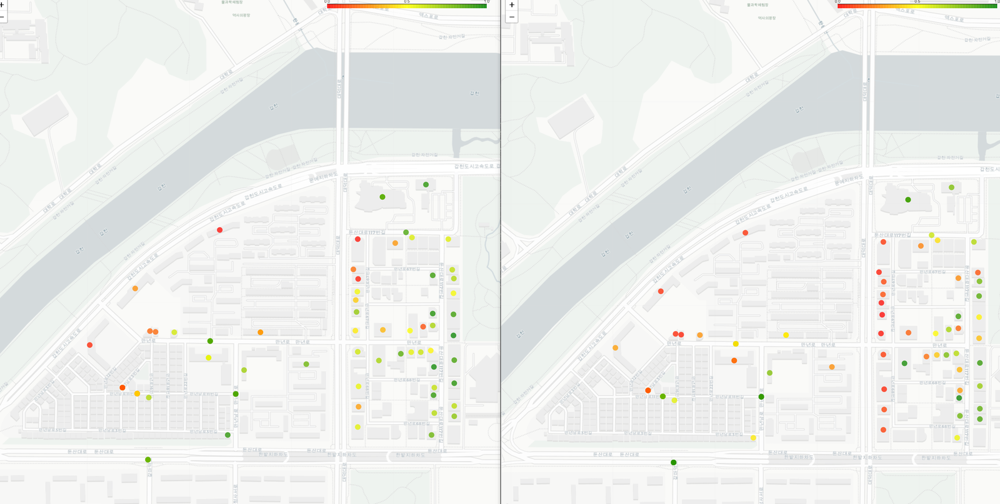

GPU 없이 추론하는 언어모델
서버 한 대 없고 GPU 한 장 없는 현장에서, 쓸모 있는 언어모델을 돌려야 한다면. 그리고 그 모델이 ‘땅’의 데이터를 읽고 추론해야 한다면.
GPU를 현장에 보낼 수 없을 때
연구실에서 모델을 키우는 일은 즐겁다. 더 큰 모델, 더 긴 컨텍스트, 더 많은 파라미터. 벤치마크 점수가 오를 때마다 우리는 더 나은 답에 가까워졌다고 믿는다. 그런데 그 모델이 떠나야 할 곳이 데이터센터가 아니라 ‘현장’이라면, 이야기는 완전히 뒤집힌다.
필자가 참여한 대전광역시·LX·KAIST 컨소시엄의 ‘융복합 데이터 활용 실감형 소방안전도시’ 과제가 그런 경우였다. 목표는 명확했다. 상수도관·가스관·전력구 같은 지하시설물의 손상을 예측하고, 그에 맞는 유지보수 방안을 언어 생성 모델로 제안하는 것. 문제는 이 모델이 일해야 하는 장소였다. 점검 차량, 현장 단말, 노후한 상황실 PC — 학습이 끝난 뒤 추론은 GPU 없이 CPU만으로 돌아가야 했다.
이 한 줄의 제약이 설계 전체를 바꾼다. 클라우드 환경이라면 “모델을 더 키우자”가 합리적 첫 수다. 그러나 GPU가 없고, 전력이 빠듯하고, 네트워크가 끊기는 지하 환경에서는 그 선택지 자체가 닫혀 있다. 여기서 “더 작고 빠르게”는 성능을 양보하는 최적화가 아니라, 그렇지 않으면 아무것도 돌아가지 않는 요구사항이다.
‘더 큰 모델’이 오답이 되는 순간은 생각보다 자주 온다. 비용(추론 서버 운영비), 전력(현장 단말의 배터리), 연결성(지하·재난 상황의 통신 두절), 그리고 응답 지연(상황실은 몇 초를 기다릴 여유가 없다)이 모두 모델 크기와 정면으로 충돌하기 때문이다. 좋은 엔지니어는 “가장 똑똑한 모델”이 아니라 “이 제약 안에서 충분히 똑똑한 가장 작은 모델”을 찾는다.
Chapter 2. CPU 추론을 가능하게 하는 기술들작게 만드는 일은 빼는 일이다
거대 모델을 CPU 위에서 실용 속도로 돌리는 일은 마법이 아니다. 그것은 잘 알려진 몇 가지 기법을, 과제의 성격에 맞게 조합하는 공학이다. 핵심은 ‘무엇을 빼도 답이 흔들리지 않는가’를 측정하며 줄여 나가는 것이다.
1. 더 작은 모델, 그리고 지식 증류
가장 직접적인 방법은 처음부터 작은 모델을 쓰는 것이다. 다만 단순히 작은 모델은 종종 모자란다. 그래서 지식 증류(distillation)를 쓴다. 크고 똑똑한 ‘교사 모델’의 출력을 정답처럼 삼아 작은 ‘학생 모델’을 학습시키면, 작은 모델이 큰 모델의 판단 경향을 상당 부분 흡수한다. 우리 과제처럼 ‘지하시설물 손상 유형 → 유지보수 문구’라는 좁은 출력 공간에서는, 증류한 소형 모델이 원본의 품질에 놀라울 만큼 근접한다.
2. 양자화: 정밀도를 낮춰 무게를 줄인다
모델의 가중치를 32비트 부동소수점에서 8비트, 때로는 4비트 정수로 표현하면 메모리와 연산량이 급감한다. CPU는 정수 연산에 강하므로, 양자화는 GPU 없는 환경에서 특히 큰 이득을 준다. 대가는 약간의 정확도 손실인데, 좁은 과제에서는 그 손실이 실용 한계 안에 머무는 경우가 많다.
3. 가지치기와 캐싱, 그리고 과제 좁히기
가지치기(pruning)는 기여도가 낮은 연결을 잘라 모델을 희소하게 만든다. 캐싱은 반복되는 입력 패턴의 중간 계산을 재사용해 응답 시간을 줄인다. 그러나 가장 과소평가된 지렛대는 따로 있다. 과제를 좁히는 것이다. 만능 비서를 만들려 하지 않고 “지하시설물 손상 보고서를 표준 양식으로 작성한다”는 한 가지 일에 집중하면, 필요한 모델 용량 자체가 줄어든다.
| 경량화 기법 | 주된 효과 | 비용 / 트레이드오프 |
|---|---|---|
| 지식 증류 | 작은 모델이 큰 모델 품질에 근접 | 교사 모델 학습·증류 파이프라인 필요 |
| 양자화 (8/4비트) | 메모리·연산량 대폭 감소, CPU 친화 | 정밀도 손실, 민감 계층 주의 |
| 가지치기 | 희소화로 모델 크기·연산 감소 | 과도하면 정확도 급락 |
| 캐싱 | 반복 입력의 응답 지연 단축 | 메모리 사용 증가, 적용 범위 제한 |
| 과제 좁히기 | 필요 용량 자체를 줄임 | 범용성 포기 — 의도된 트레이드오프 |
이 표의 모든 행은 ‘공짜’가 아니다. 무게를 줄이면 무언가를 양보한다. 엔지니어링이란 그 양보를 무작정 받아들이는 것이 아니라, 어디까지 양보해도 현장이 요구하는 품질이 유지되는지를 측정으로 확인하는 일이다.
텍스트가 아니라 장소를 추론하게 하기
경량화가 ‘작게’의 문제라면, GeoLLM은 ‘날카롭게’의 문제다. 일반 언어모델은 세상의 텍스트를 학습한다. 그래서 “이 지역 지하시설물의 위험도가 높은가”라는 질문에는 그럴듯하지만 근거 없는 문장을 만들어 낼 위험이 있다. 모델이 본 적 있는 것은 ‘말’이지 ‘땅’이 아니기 때문이다.
GeoLLM은 언어모델을 공간·토지 데이터에 정착(grounding)시키는 연구다. 지번, 용도지역, 지하시설물의 매설 깊이와 노후도, 인접 시설과의 관계, 지반 특성 같은 정형·공간 데이터를 모델의 추론에 직접 연결한다. 그러면 모델은 텍스트의 통계적 평균이 아니라 그 장소의 실제 데이터를 근거로 답한다. “이 구간은 매설 30년이 넘은 주철관이고 인접 굴착 이력이 있으니 우선 점검 대상”이라는 식의, 근거가 추적 가능한 추론이 가능해진다.

여기서 중요한 통찰이 나온다. 좁은 과제에서는 모델의 크기보다 도메인 정착이 더 큰 이득을 준다. 지하시설물 유지보수처럼 한정된 영역에서는, 파라미터를 열 배 키우는 것보다 양질의 공간 데이터에 모델을 정확히 연결하는 편이 정답률을 더 끌어올린다. 그리고 도메인에 정착한 모델은 작아도 된다. 정착이 곧 경량화의 명분이 되는 셈이다. ‘작게’와 ‘날카롭게’는 충돌하지 않고 서로를 돕는다.
Chapter 4. 가변 레이어 학습모든 입력에 같은 깊이로 생각할 필요는 없다
경량화가 완성된 모델을 줄이는 일이라면, 가변 레이어 학습(variable-layer learning)은 학습 단계에서부터 효율을 끌어올리려는 시도다. 핵심 직관은 단순하다. 신경망의 모든 계층(layer)을, 모든 입력에 대해, 매번 똑같이 다 쓸 필요가 있는가?
쉬운 입력은 얕은 계층만으로도 충분히 판단할 수 있고, 어려운 입력에만 깊은 계층까지 동원하면 된다. 가변 레이어 학습은 이 ‘쓰는 깊이’를 입력과 학습 상황에 따라 유연하게 조절한다. 그 결과 불필요한 연산을 줄여 학습이 빨라지고, 계층마다 역할이 또렷해져 일반화 성능까지 개선되는 경향이 있다.
이 아이디어가 현장 모델과 잘 맞는 이유는 분명하다. 학습 효율이 좋아지면 같은 자원으로 더 잘 학습된 모델을 얻고, 추론 시 ‘쉬운 입력은 얕게’ 처리하는 구조는 그대로 CPU 환경의 평균 응답 시간 단축으로 이어진다. 작게 만드는 기법과 똑똑하게 학습하는 기법이 같은 곳을 가리키는 것이다.
맺음말거대한 구름과 작고 날카로운 모서리
AI의 미래를 그릴 때 우리는 종종 ‘더 큰 클라우드 모델’ 한 방향만 본다. 그러나 모델이 실제로 일해야 하는 곳은 데이터센터만이 아니다. GPU 없는 점검 차량, 통신이 끊기는 지하, 몇 초도 기다릴 수 없는 상황실 — 이런 모서리(edge)에서는 거대 모델이 아니라 작고 날카로운 모델이 답이다.
지하시설물 손상을 예측하고 유지보수 문구를 짓는 일에는, 세상의 모든 텍스트를 아는 모델이 필요하지 않다. 그 장소의 데이터에 정착하고, CPU 위에서 빠르게 돌고, 충분히 정확하면 된다. 거대한 구름과 작은 모서리는 경쟁하지 않는다. 둘은 AI가 세상에 닿는 두 개의 다른 길이며, 좋은 엔지니어는 과제가 어느 길을 요구하는지를 먼저 읽는다. 미래는 더 큰 모델만의 것이 아니라, 제약을 정확히 읽어 낸 작은 모델의 것이기도 하다.
참고
- 대전광역시·LX한국국토정보공사·KAIST 컨소시엄, ‘융복합 데이터 활용 실감형 소방안전도시’ 과제 — 지하시설물 손상 예측 및 유지보수 방안 생성(언어모델), CPU 기반 현장 추론 환경.
- GeoLLM 관련: 토지·공간 데이터에 기반한 언어모델 추론·생성 연구.
- 본문의 수치·사례는 일반적 경향을 설명하기 위한 것으로, 구체적 값은 과제·모델·데이터에 따라 달라진다.